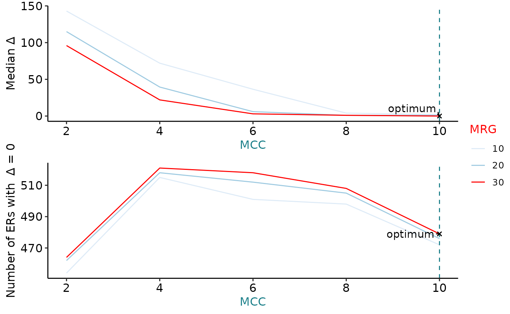

vignettes/ODERflow.Rmd
ODERflow.RmdODER
R is an open-source statistical environment which can be easily modified to enhance its functionality via packages. ODER is a R package available via the Bioconductor repository for packages. R can be installed on any operating system from CRAN after which you can install ODER by using the following commands in your R session:
if (!requireNamespace("BiocManager", quietly = TRUE)) {
install.packages("BiocManager")
}
BiocManager::install("ODER")
## Check that you have a valid Bioconductor installation
BiocManager::valid()ODER is based on many other packages and in particular in those that have implemented the infrastructure needed for dealing with RNA-seq data (EDIT!). That is, packages like SummarizedExperiment (EDIT!).
If you are asking yourself the question “Where do I start using Bioconductor?” you might be interested in this blog post.
As package developers, we try to explain clearly how to use our packages and in which order to use the functions. But R and Bioconductor have a steep learning curve so it is critical to learn where to ask for help. The blog post quoted above mentions some but we would like to highlight the Bioconductor support site as the main resource for getting help: remember to use the ODER tag and check the older posts. Other alternatives are available such as creating GitHub issues and tweeting. However, please note that if you want to receive help you should adhere to the posting guidelines. It is particularly critical that you provide a small reproducible example and your session information so package developers can track down the source of the error.
ODER
We hope that ODER will be useful for your research. Please use the following information to cite the package and the overall approach. Thank you!
## Citation info
# citation("ODER")ODER
#> Setting options('download.file.method.GEOquery'='auto')
#> Setting options('GEOquery.inmemory.gpl'=FALSE)
#> 2021-05-11 09:34:54 downloading the metadata to /tmp/RtmpU17UF6/metadata_clean_gtex.Rdata#> Loading required package: BiocGenerics
#> Loading required package: parallel
#>
#> Attaching package: 'BiocGenerics'
#> The following objects are masked from 'package:parallel':
#>
#> clusterApply, clusterApplyLB, clusterCall, clusterEvalQ,
#> clusterExport, clusterMap, parApply, parCapply, parLapply,
#> parLapplyLB, parRapply, parSapply, parSapplyLB
#> The following objects are masked from 'package:stats':
#>
#> IQR, mad, sd, var, xtabs
#> The following objects are masked from 'package:base':
#>
#> anyDuplicated, append, as.data.frame, basename, cbind, colnames,
#> dirname, do.call, duplicated, eval, evalq, Filter, Find, get, grep,
#> grepl, intersect, is.unsorted, lapply, Map, mapply, match, mget,
#> order, paste, pmax, pmax.int, pmin, pmin.int, Position, rank,
#> rbind, Reduce, rownames, sapply, setdiff, sort, table, tapply,
#> union, unique, unsplit, which.max, which.min
#> Loading required package: S4Vectors
#> Loading required package: stats4
#>
#> Attaching package: 'S4Vectors'
#> The following object is masked from 'package:base':
#>
#> expand.grid
#> [1] "2021-05-11 09:35:00 - Obtaining mean coverage across 1 samples"
#> [1] "2021-05-11 09:35:00 - chr21"
#> [1] "2021-05-11 09:35:02 - chr22"
#> $chr21
#> $chr21$meanCoverage
#> numeric-Rle of length 46709983 with 351770 runs
#> Lengths: 5010597 76 112 74 ... 2074 36 10111
#> Values : 0.000000 0.336908 0.000000 0.336908 ... 0.000000 0.336908 0.000000
#>
#>
#> $chr22
#> $chr22$meanCoverage
#> numeric-Rle of length 50818468 with 619684 runs
#> Lengths: 10519675 2 1 2 ... 160 76 13858
#> Values : 0.000000 0.336908 0.673815 6.401246 ... 0.000000 0.336908 0.000000
#> [1] "2021-05-11 09:35:02 - Generating ERs for chr21"
#> [1] "2021-05-11 09:35:10 - Generating ERs for chr22"#> [1] "2021-05-11 09:35:17 - Loading in GTF..."
#> [1] "2021-05-11 09:36:10 - Obtaining non-overlapping exons"#> [1] "2021-05-11 09:36:12 - Calculating delta for ERs..."#> [1] "2021-05-11 09:36:17 - Obtaining optimal set of ERs..."
This package was developed using biocthis.
Code for creating the vignette
## Create the vignette
library("rmarkdown")
system.time(render("ODER.Rmd", "BiocStyle::html_document"))
## Extract the R code
library("knitr")
knit("ODER.Rmd", tangle = TRUE)Date the vignette was generated.
#> [1] "2021-05-11 09:36:19 UTC"Wallclock time spent generating the vignette.
#> Time difference of 1.726 minsR session information.
#> ─ Session info ───────────────────────────────────────────────────────────────────────────────────────────────────────
#> setting value
#> version R version 4.0.3 (2020-10-10)
#> os Ubuntu 20.04 LTS
#> system x86_64, linux-gnu
#> ui X11
#> language (EN)
#> collate en_US.UTF-8
#> ctype en_US.UTF-8
#> tz Etc/UTC
#> date 2021-05-11
#>
#> ─ Packages ───────────────────────────────────────────────────────────────────────────────────────────────────────────
#> package * version date lib source
#> abind 1.4-5 2016-07-21 [1] RSPM (R 4.0.3)
#> AnnotationDbi 1.52.0 2020-10-27 [1] Bioconductor
#> askpass 1.1 2019-01-13 [2] RSPM (R 4.0.3)
#> assertthat 0.2.1 2019-03-21 [2] RSPM (R 4.0.3)
#> backports 1.2.1 2020-12-09 [1] RSPM (R 4.0.3)
#> base64enc 0.1-3 2015-07-28 [2] RSPM (R 4.0.3)
#> Biobase 2.50.0 2020-10-27 [1] Bioconductor
#> BiocFileCache 1.14.0 2020-10-27 [1] Bioconductor
#> BiocGenerics * 0.36.1 2021-04-16 [1] Bioconductor
#> BiocManager 1.30.10 2019-11-16 [1] RSPM (R 4.0.0)
#> BiocParallel 1.24.1 2020-11-06 [1] Bioconductor
#> BiocStyle * 2.18.1 2020-11-24 [1] Bioconductor
#> biomaRt 2.46.3 2021-02-09 [1] Bioconductor
#> Biostrings 2.58.0 2020-10-27 [1] Bioconductor
#> bit 4.0.4 2020-08-04 [1] RSPM (R 4.0.3)
#> bit64 4.0.5 2020-08-30 [1] RSPM (R 4.0.3)
#> bitops 1.0-6 2013-08-17 [1] RSPM (R 4.0.3)
#> blob 1.2.1 2020-01-20 [1] RSPM (R 4.0.3)
#> bookdown 0.21 2020-10-13 [1] RSPM (R 4.0.2)
#> broom 0.7.4 2021-01-29 [1] RSPM (R 4.0.3)
#> BSgenome 1.58.0 2020-10-27 [1] Bioconductor
#> bumphunter 1.32.0 2020-10-27 [1] Bioconductor
#> cachem 1.0.4 2021-02-13 [2] RSPM (R 4.0.3)
#> car 3.0-10 2020-09-29 [1] RSPM (R 4.0.3)
#> carData 3.0-4 2020-05-22 [1] RSPM (R 4.0.3)
#> cellranger 1.1.0 2016-07-27 [1] RSPM (R 4.0.3)
#> checkmate 2.0.0 2020-02-06 [1] RSPM (R 4.0.3)
#> cli 2.3.0 2021-01-31 [2] RSPM (R 4.0.3)
#> cluster 2.1.1 2021-02-14 [3] RSPM (R 4.0.3)
#> codetools 0.2-18 2020-11-04 [3] RSPM (R 4.0.3)
#> colorspace 2.0-0 2020-11-11 [1] RSPM (R 4.0.3)
#> cowplot 1.1.1 2020-12-30 [1] RSPM (R 4.0.3)
#> crayon 1.4.1 2021-02-08 [2] RSPM (R 4.0.3)
#> curl 4.3 2019-12-02 [2] RSPM (R 4.0.3)
#> data.table 1.13.6 2020-12-30 [1] RSPM (R 4.0.3)
#> DBI 1.1.1 2021-01-15 [1] RSPM (R 4.0.3)
#> dbplyr 2.1.0 2021-02-03 [1] RSPM (R 4.0.3)
#> DelayedArray 0.16.3 2021-03-24 [1] Bioconductor
#> derfinder 1.24.2 2020-12-18 [1] Bioconductor
#> derfinderHelper 1.24.1 2020-12-18 [1] Bioconductor
#> desc 1.2.0 2018-05-01 [2] RSPM (R 4.0.3)
#> digest 0.6.27 2020-10-24 [2] RSPM (R 4.0.3)
#> doRNG 1.8.2 2020-01-27 [1] RSPM (R 4.0.3)
#> downloader 0.4 2015-07-09 [1] RSPM (R 4.0.3)
#> dplyr 1.0.4 2021-02-02 [1] RSPM (R 4.0.3)
#> ellipsis 0.3.1 2020-05-15 [2] RSPM (R 4.0.3)
#> evaluate 0.14 2019-05-28 [2] RSPM (R 4.0.3)
#> farver 2.0.3 2020-01-16 [1] RSPM (R 4.0.3)
#> fastmap 1.1.0 2021-01-25 [2] RSPM (R 4.0.3)
#> forcats 0.5.1 2021-01-27 [1] RSPM (R 4.0.3)
#> foreach 1.5.1 2020-10-15 [1] RSPM (R 4.0.3)
#> foreign 0.8-81 2020-12-22 [3] RSPM (R 4.0.3)
#> Formula 1.2-4 2020-10-16 [1] RSPM (R 4.0.3)
#> fs 1.5.0 2020-07-31 [2] RSPM (R 4.0.3)
#> generics 0.1.0 2020-10-31 [1] RSPM (R 4.0.3)
#> GenomeInfoDb * 1.26.7 2021-04-08 [1] Bioconductor
#> GenomeInfoDbData 1.2.4 2021-05-04 [1] Bioconductor
#> GenomicAlignments 1.26.0 2020-10-27 [1] Bioconductor
#> GenomicFeatures 1.42.3 2021-04-01 [1] Bioconductor
#> GenomicFiles 1.26.0 2020-10-27 [1] Bioconductor
#> GenomicRanges 1.42.0 2020-10-27 [1] Bioconductor
#> GEOquery 2.58.0 2020-10-27 [1] Bioconductor
#> ggplot2 3.3.3 2020-12-30 [1] RSPM (R 4.0.3)
#> ggpubr 0.4.0 2020-06-27 [1] RSPM (R 4.0.3)
#> ggrepel 0.9.1 2021-01-15 [1] RSPM (R 4.0.3)
#> ggsignif 0.6.0 2019-08-08 [1] RSPM (R 4.0.3)
#> glue 1.4.2 2020-08-27 [2] RSPM (R 4.0.3)
#> gridExtra 2.3 2017-09-09 [1] RSPM (R 4.0.3)
#> gtable 0.3.0 2019-03-25 [1] RSPM (R 4.0.3)
#> haven 2.3.1 2020-06-01 [1] RSPM (R 4.0.3)
#> highr 0.8 2019-03-20 [2] RSPM (R 4.0.3)
#> Hmisc 4.4-2 2020-11-29 [1] RSPM (R 4.0.3)
#> hms 1.0.0 2021-01-13 [1] RSPM (R 4.0.3)
#> htmlTable 2.1.0 2020-09-16 [1] RSPM (R 4.0.3)
#> htmltools 0.5.1.1 2021-01-22 [2] RSPM (R 4.0.3)
#> htmlwidgets 1.5.3 2020-12-10 [2] RSPM (R 4.0.3)
#> httr 1.4.2 2020-07-20 [2] RSPM (R 4.0.3)
#> IRanges * 2.24.1 2020-12-12 [1] Bioconductor
#> iterators 1.0.13 2020-10-15 [1] RSPM (R 4.0.3)
#> jpeg 0.1-8.1 2019-10-24 [1] RSPM (R 4.0.3)
#> jsonlite 1.7.2 2020-12-09 [2] RSPM (R 4.0.3)
#> knitr 1.31 2021-01-27 [2] RSPM (R 4.0.3)
#> labeling 0.4.2 2020-10-20 [1] RSPM (R 4.0.3)
#> lattice 0.20-41 2020-04-02 [3] CRAN (R 4.0.3)
#> latticeExtra 0.6-29 2019-12-19 [1] RSPM (R 4.0.3)
#> lifecycle 1.0.0 2021-02-15 [2] RSPM (R 4.0.3)
#> limma 3.46.0 2020-10-27 [1] Bioconductor
#> locfit 1.5-9.4 2020-03-25 [1] RSPM (R 4.0.3)
#> lubridate 1.7.9.2 2020-11-13 [1] RSPM (R 4.0.3)
#> magrittr * 2.0.1 2020-11-17 [2] RSPM (R 4.0.3)
#> Matrix 1.3-2 2021-01-06 [3] RSPM (R 4.0.3)
#> MatrixGenerics 1.2.1 2021-01-30 [1] Bioconductor
#> matrixStats 0.58.0 2021-01-29 [1] RSPM (R 4.0.3)
#> memoise 2.0.0 2021-01-26 [2] RSPM (R 4.0.3)
#> munsell 0.5.0 2018-06-12 [1] RSPM (R 4.0.3)
#> nnet 7.3-15 2021-01-24 [3] RSPM (R 4.0.3)
#> ODER * 0.99.4 2021-05-11 [1] Bioconductor
#> openssl 1.4.3 2020-09-18 [2] RSPM (R 4.0.3)
#> openxlsx 4.2.3 2020-10-27 [1] RSPM (R 4.0.3)
#> pillar 1.4.7 2020-11-20 [2] RSPM (R 4.0.3)
#> pkgconfig 2.0.3 2019-09-22 [2] RSPM (R 4.0.3)
#> pkgdown 1.6.1 2020-09-12 [1] RSPM (R 4.0.2)
#> plyr 1.8.6 2020-03-03 [1] RSPM (R 4.0.3)
#> png 0.1-7 2013-12-03 [1] RSPM (R 4.0.3)
#> prettyunits 1.1.1 2020-01-24 [2] RSPM (R 4.0.3)
#> progress 1.2.2 2019-05-16 [1] RSPM (R 4.0.3)
#> purrr 0.3.4 2020-04-17 [2] RSPM (R 4.0.3)
#> qvalue 2.22.0 2020-10-27 [1] Bioconductor
#> R6 2.5.0 2020-10-28 [2] RSPM (R 4.0.3)
#> ragg 1.1.0 2021-02-15 [1] RSPM (R 4.0.3)
#> rappdirs 0.3.3 2021-01-31 [2] RSPM (R 4.0.3)
#> RColorBrewer 1.1-2 2014-12-07 [1] RSPM (R 4.0.3)
#> Rcpp 1.0.6 2021-01-15 [2] RSPM (R 4.0.3)
#> RCurl 1.98-1.2 2020-04-18 [1] RSPM (R 4.0.3)
#> readr 1.4.0 2020-10-05 [1] RSPM (R 4.0.3)
#> readxl 1.3.1 2019-03-13 [1] RSPM (R 4.0.3)
#> recount 1.16.1 2020-12-18 [1] Bioconductor
#> RefManageR * 1.3.0 2020-11-13 [1] RSPM (R 4.0.3)
#> rentrez 1.2.3 2020-11-10 [1] RSPM (R 4.0.3)
#> reshape2 1.4.4 2020-04-09 [1] RSPM (R 4.0.3)
#> rio 0.5.16 2018-11-26 [1] RSPM (R 4.0.3)
#> rlang 0.4.10 2020-12-30 [2] RSPM (R 4.0.3)
#> rmarkdown 2.6 2020-12-14 [1] RSPM (R 4.0.3)
#> rngtools 1.5 2020-01-23 [1] RSPM (R 4.0.3)
#> rpart 4.1-15 2019-04-12 [3] CRAN (R 4.0.3)
#> rprojroot 2.0.2 2020-11-15 [2] RSPM (R 4.0.3)
#> Rsamtools 2.6.0 2020-10-27 [1] Bioconductor
#> RSQLite 2.2.3 2021-01-24 [1] RSPM (R 4.0.3)
#> rstatix 0.7.0 2021-02-13 [1] RSPM (R 4.0.3)
#> rstudioapi 0.13 2020-11-12 [2] RSPM (R 4.0.3)
#> rtracklayer 1.50.0 2020-10-27 [1] Bioconductor
#> S4Vectors * 0.28.1 2020-12-09 [1] Bioconductor
#> scales 1.1.1 2020-05-11 [1] RSPM (R 4.0.3)
#> sessioninfo * 1.1.1 2018-11-05 [2] RSPM (R 4.0.3)
#> stringi 1.5.3 2020-09-09 [2] RSPM (R 4.0.3)
#> stringr 1.4.0 2019-02-10 [2] RSPM (R 4.0.3)
#> SummarizedExperiment 1.20.0 2020-10-27 [1] Bioconductor
#> survival 3.2-7 2020-09-28 [3] CRAN (R 4.0.3)
#> systemfonts 1.0.1 2021-02-09 [1] RSPM (R 4.0.3)
#> textshaping 0.3.0 2021-02-10 [1] RSPM (R 4.0.3)
#> tibble 3.0.6 2021-01-29 [2] RSPM (R 4.0.3)
#> tidyr 1.1.2 2020-08-27 [1] RSPM (R 4.0.3)
#> tidyselect 1.1.0 2020-05-11 [1] RSPM (R 4.0.3)
#> VariantAnnotation 1.36.0 2020-10-27 [1] Bioconductor
#> vctrs 0.3.6 2020-12-17 [2] RSPM (R 4.0.3)
#> withr 2.4.1 2021-01-26 [2] RSPM (R 4.0.3)
#> xfun 0.21 2021-02-10 [2] RSPM (R 4.0.3)
#> XML 3.99-0.5 2020-07-23 [1] RSPM (R 4.0.3)
#> xml2 1.3.2 2020-04-23 [2] RSPM (R 4.0.3)
#> XVector 0.30.0 2020-10-27 [1] Bioconductor
#> yaml 2.2.1 2020-02-01 [2] RSPM (R 4.0.3)
#> zip 2.1.1 2020-08-27 [2] RSPM (R 4.0.3)
#> zlibbioc 1.36.0 2020-10-27 [1] Bioconductor
#>
#> [1] /__w/_temp/Library
#> [2] /usr/local/lib/R/site-library
#> [3] /usr/local/lib/R/library